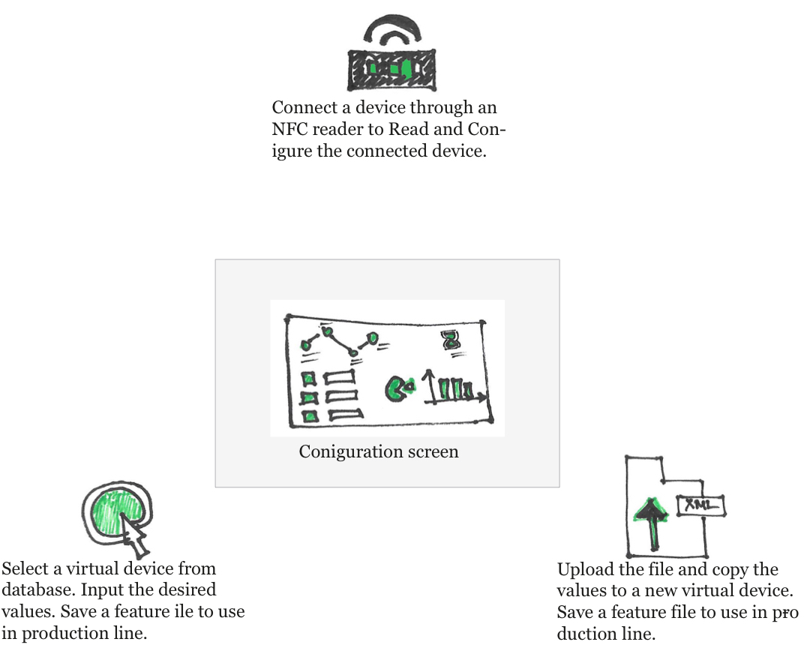
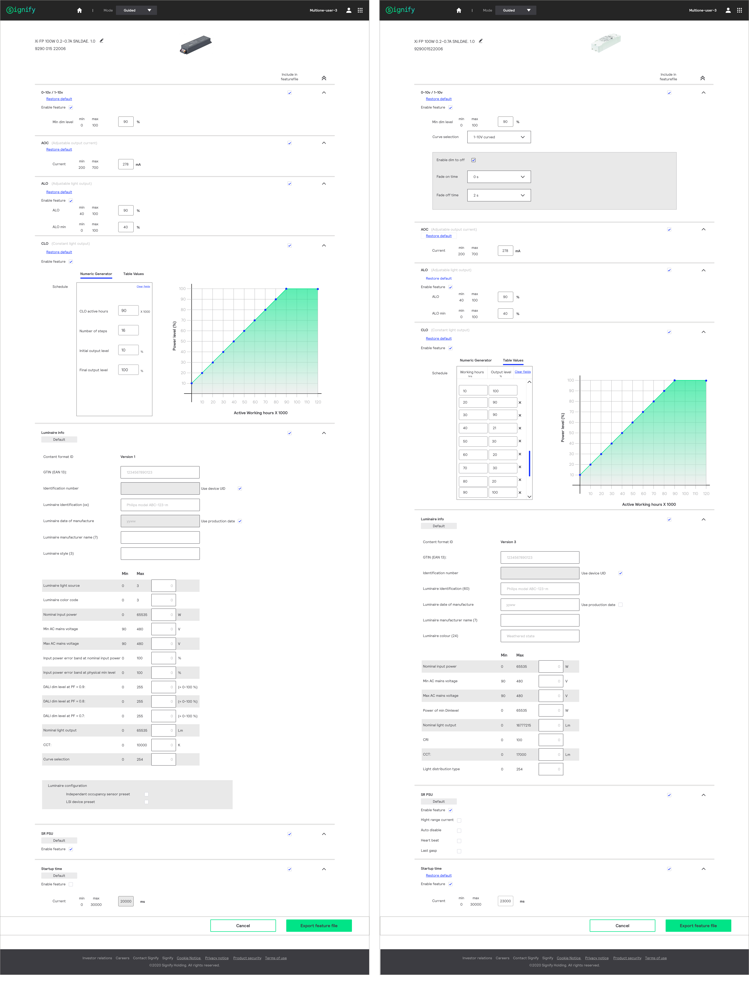
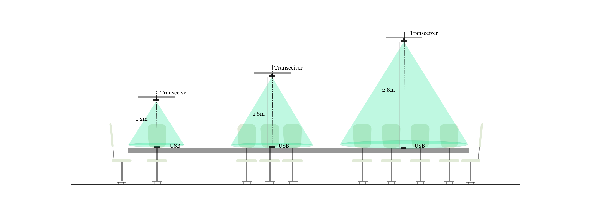

| User Experience Design | User Interaction Design | Visualization and Prototyping | Branding and Marketing |
MultiOne : Signify
MultiOne is an engineering tool that will be used by the OEMs of Signify in their production line. It is a vey strategic program with an enhanced process, orders and hence impacting their revenue generation.

I gained a rich experience of working with end Users (OEMs of Signify); Key users(Signify) such as Product Owner, Product managers, system architects etc, for prioritising features according to User research and market demands. Since it is a go to market application, Signify's Branding and design guidelines had to be followed strictly and getting their Signoff was one of my Primary scope of work.
Fundamental Principles
The design approach was to keep the overall application simple, self-explanatory and allow the User’s focus on configuration process. It is a complex engineering application with driver features such as AOC, ALO, CLO, Start up time, Luminaire info, SR PSU, ztv etc., are custom configured. UI componants such as sliders, graphs, form filling, dropdowns, radio buttons to help users choose the desired values. Many high fidelity prototypes in Micro and Macro level, were created for conducting User testing and collect feedback.
Configuring devices through NFC (Near field communication)
After a series of steps in establishing the contact between the reader and device, the device reading process start. Here you can see the screen is updated of the status. Appropriate Colors and icons assist users with visual indication.
Virtual configuration and Creating a feature file.
After selecting a device, the screen displays a list of all supported features and schemas calling a series of APIs. The User can adjust the values. At point these values can be set back to their defaults. The end result is to create a feature file with all the inputs, which will be used at the production line for device manufacturers (OEMs). Each selection of device relevant features are displayed by calling API
Lifi : Signify
Trulifi by Signify is a range of LiFi systems, utilizing light waves for wireless communications. Signify' s customers can use their current lighting infrastructure to power Reliable and Secure connectivity. A unique capability of Lifi is the ability to predict performance using LiFi technology which is very difficult with Radio waves like in WiFi. The Tru-Lifi coverage portal is being conceptualized by Signify as a tool to empower the Signify team (and thereby the customer) to be able to predict the Lifi coverage and performance in target workspaces inside a room or in an open space area. 
Visualization to help user understand the basic behaviour of Tranceiver, ceiling height, Work plane in the application

The application is used by the Engineers and Designers of Signify. Currently the process is carried out manually. This application is aimed to solve the design and calculations with the inbuilt formulas and visualisations, and thus needing minimal technical awareness in making the design proposals.
User journeys of Various personas and Users were analysed to finilaze the features and Overall workflow
I played a key role in the end to end solutioning of design, building formulas in the backend from the lookup table and displaying these values to the end user in the most efficient way. The application is built on Electron platform and has flexibility in scaling as the engineering of lifi is evolving rapidly and may require fast release cycles.
Application in few simple steps
- Enter Room Parameters in cms.
- Upload image of plan as background for reference.
- Add surfaces where the lifi coverage is required.
- Select the kind of tranceiver.
- Click on Calculate.
A default lifi coverage layout is displayed based on the inputs provided by the user. It is quiet a complex formula,with calculations done according to the user's inputs and interpolating many critical data points from the lookup table . The end result gives the details of lifi speed, coverage area, the supporting modem and finally generating a Bill of materials for project design and estimation.

OSDU Solutions : OSDU; Microsoft; Wipro
The Open subsurface Data Universe is an Industry Forum formed to establish an Open subsurface Reference Architecture: A cloud-native subsurface data platform reference architecture, with usable implementations for Microsoft Azure, Amazon AWS, and Google GCP. Consistent API standards for connecting the Platform with cloud and software vendors, micro services, and proprietary solutions. Master and reference data standards for frictionless integration and data access.
Project Vision
This platform is aimed to make DATA accessible to research of various users such as Geologists, Petro physicists, Reservoir Engineers, Universities etc. The Data related to Oil and Gas wells & alternative energy farms such as Wind Farms, Solar Farms, Hydrogen, Hydro, Geothermal location in the Subsurface. Currently the data is available in silos and this platform is the address this through design.Data Ingestion is a one of the many critical features
Depending on the choices made in Set-1, the Set -2 form is generated.
After Set-2 inputs, the file is transfered to the queue of prepared ingestion files.


The UI of the application is designed based on Fluent design Principles. UI componants are taken from the code pen provided from Microsoft for development. The appliction had be be designed from scratch, and hence choosing colour palette, icons, Style was also part of my design scope.
Roha (international Courier Services) : Freelance
The application and process improvement proposal was for Roha international courier services, India. It was created to enhance customer experience to support their new business catering across 182 Countries.
Project Scope
The User experience improvement was necessary due to the increased pressure of calls per day, increased country wise regulations and to bring in efficiency in process and overall customer satisfaction.Journey of a Package

Journey of the package and its various touch points are important to improve over all User Experience.

It is a busy application, Finding a right balance of soft colors and yet drawing attention to the critical actions through accent colours.
Various forms of User research was done which include tracking the call log questions, feedback forms,complaint handing, Customer and User interviews etc. The research was the basis to understand the painpoints and finding design solution.